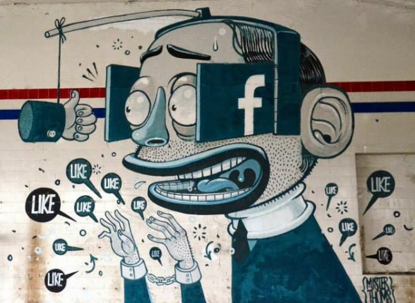

Фейсбук, Інстаграм, Твітер та ВК – зручне віконце у великий світ інформації? Інструмент, що дозволяє спілкуватися зі старими друзями та знаходити нових? Затишний особистий щоденник? Ні, ні і ні! Ось п’ять причин, через які вам потрібно видалити свій аккаунт прямо зараз. А ви спробуйте назвати хоча б одну переконливу причину, по якій там варто залишатися.
Ваші друзі постять про себе тільки хороше і тобі починає здаватися, що їхнє життя, на відміну від вашого – суцільне свято. Інстаграм, Фейсбук та інші – це великий ярмарок марнославства, де всі один одному тихо заздрять і чимало користувачів брешуть про себе і про свої успіхи, таким чином самостверджуючись та компенсуючи якісь нездійснені мрії. Це підтверджують і дослідження: чим більше часу проводиш в соцмережах, тим нижча самооцінка і тим більше нездорової заздрості.
Більшість ваших друзів у соцмережах – ніякі не друзі, а бог знає хто. Тим більше, якщо їх більше сотні. Навіщо ж вести себе так, ніби вже настав комунізм і можна ділитися з незнайомцями особистою інформацією?
Соціальні мережі вже кілька років як перестали бути особистим простором – тепер це громадське місце. Вас читають родичі, сусіди, колеги, а також начальство (актуальне і потенційне). Історій про те, як люди вилетіли з роботи через пости в соцмережах – тисячі. Пам’ятайте про це, коли захочете поскаржитися друзям на свою нудну роботу або просто запостити фотографію з п’янки. Налаштування приватності, на жаль, не допомагають – при бажанні їх легко обійти.
Просто уявіть, скільки часу ви витрачаєте на абсолютно безглузде блукання по стрічці новин. Іноді, звичайно, там трапляються цікаві та корисні знахідки, але вони тонуть під валом відвертого мотлоху. Може, варто припинити тупити і витратити весь цей час на щось корисне? На роботу, наприклад. Або на хорошу книгу. Або на що завгодно

Стрічка соцмереж побудована таким чином, що ви бачите далеко не всіх друзів і сторінки, які сподобались. Алгоритм підсовує тільки те, що вам точно сподобається і утримає в стрічці. Подібним чином діє і Google, до речі, але він хоча б дозволяє відключати цей механізм. Це робиться головним чином для рекламодавців, щоб проплачені пости потрапляли точно в ціль. Побічний ефект: ви опиняєтеся в інформаційній хмарі і просто не бачите нічого, що хоч трохи порушило б вашу особисту картину світу. Таким чином ваші помилки зміцнюються, а здатність почути альтернативну точку зору зменшується. Кругозір звужується до вузенької щілинки. І буде дуже неприємно, коли реальний стан речей різко опустить на землю.
Повернутися назад